This is the information that can improve the efficiency of maintenance and assure the sound work.
Replace the nonreusable parts with new parts. Check the tightening torque and tighten to the specified torque.
Do not apply paint, lubricant, rust retardant or other substance to the surface around bolts, nuts, etc. Doing so will make it difficult to obtain the correct torque and result in looseness and other problem.
Do not touch the control modules, connectors, logic boards and other such parts when there is a risk of static electricity. Always use a static electricity prevention cord or touch grounded metal for the elimination of static electricity before conducting work.
When removing the battery cables, always be sure to turn the ignition switch to OFF to prevent electrical damage to the control module from overcurrent.
Use genuine parts for maximum performance and maintenance when conducting repairs. Subaru/FHI will not be responsible for poor performance resulting from the use of parts except for genuine parts.
5. PROTECTING VEHICLE UNDER MAINTENANCE
Make sure to attach the fender cover, seat covers, etc. before work.
6. ENSURING SECURITY DURING WORK
When working in a group of two or more, perform the work with calling each other to ensure mutual safety.
When using a lift or shop jack raise a vehicle or using rigid rack to support a vehicle, always follow instructions concerning jack-up points and weight limits to prevent the vehicle from falling, which could result in injury. Be especially careful that the vehicle is balanced before raising it. Be sure to set the wheel stoppers when jacking-up only the front or rear side of the vehicle.
• SUPPORTING LOCATIONS
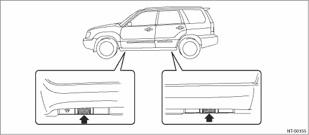
• PANTOGRAPH JACK
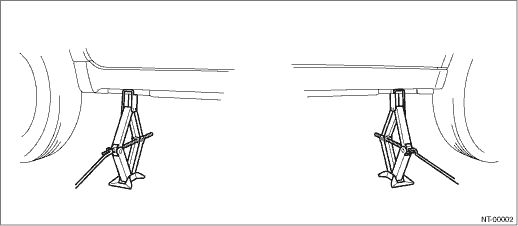
• LIFT
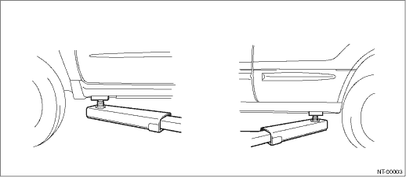
• RIGID RACK
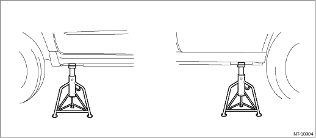
• JACK-UP POINT
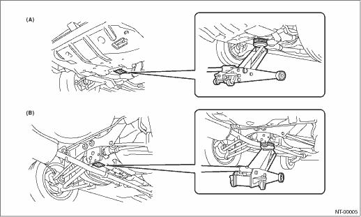
|
(A) |
Front |
(B) |
Rear |
Tie-downs are used when transporting vehicles and when using the chassis dynamo. Attach tie-down only to the specified place on the vehicle.
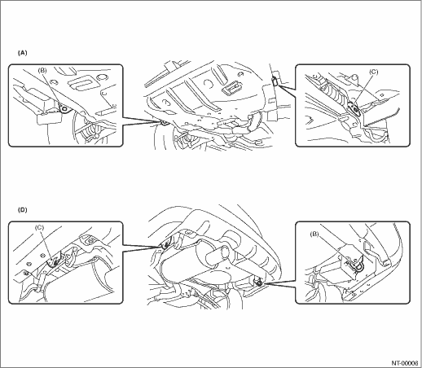
|
(A) |
Front |
(C) |
Hook for tie-down |
(D) |
Rear |
|
(B) |
Hook for tie-down and towing |
• CHAIN DIRECTION AT TIE-DOWN CONDITION
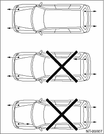
• CHAIN PULLING RANGE AT TIE-DOWN CONDITION
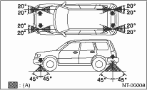
|
(A) |
Chain pulling range at tie-down condition |
Avoid towing vehicles except when the vehicle cannot be driven. For models with AWD or AT, use a loader instead of towing. When towing other vehicles, pay attention to the following to prevent hook or vehicle damage resulting from excessive weight.
• Do not tow other vehicles with a front tie-down hook.
• Make sure the vehicle towing is heavier than the vehicle being towed.
• VEHICLE SINKING VOLUME AT TIE-DOWN CONDITION
Measure the distance between the highest tire point and highest arch point before and after tie-down. Difference of measured values (sinking volume) should be within 50 mm (1.97 in) and make sure to fix the vehicle securely.
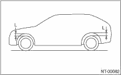
10. FRONT HOOD STAY INSTALLATION
• AT THE CHECK AND GENERAL MAINTENANCE
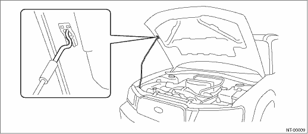
• WHEN WIDER HOOD OPENING IS NECESSARY
Set stay into the hole of front hood inner as shown in the figure below.
NOTE:
Before setting the hood in this position, remove the windshield washer hose attaching clip from the hood.
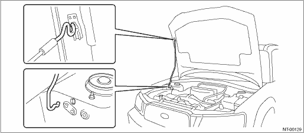
For an information about training, contact a dealer or agent.
Using general scan tools will greatly improve the efficiency of repairing engine electronic controls. Subaru Select Monitor can be used to diagnose the engine, ABS, air conditioner and other parts.